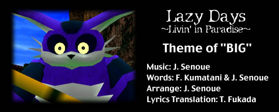

ああ、風が強く晴れた日だね
小さな波の音も聞こえる
先週も知らない間に過ぎていった
いつも通りだね、太陽に照らされ光輝くこの空は
僕らの無邪気な楽しみを予感させる
ああ、風が強く晴れた日だね
幾つもの夏、幾つもの楽しいゲーム
今日も順風満帆な一日だよ
僕らの遊び場は果てしなく大きくて境目がわからないくらい
僕らって生き生きしてすっごくグルーヴィー
何もかもが順調で最高だ!
毎日が新しい出発 - 今日は誰に出会うかわからない
欲しがれば欲しがるほど得るものは少なく - まだ来ぬ日に向かってひたすら歩くしかない
だけどこれで満足 心を自由にするんだ
何も気にしないさ、前進！前進！
大きな男に小さな男
最初にやってきたのはどっちだっけ?
わるいけど、僕にはわかんないよ
僕らこそ自然
立ち上がって左右前方確認だ
大きな男に小さな男
その中身はどうなってる?
わるいけど、僕にはわかんないよ
僕らこそ自然
僕らが捧げるパラダイスにようこそ!
今日のことどう思ってる？ - いつもそうやって僕の気持ちを弄ぶんだ
君が聞く前に僕は第一歩を記したんだ - ちゃんと返事してくれよー!
これからも二人仲良くやっていくんだろー!
どう思ってるか教えてくれ
だけど、いつものその笑顔にはかなわないよ
ハッピーハッピー!
とっても最高だー!
大きな男に小さな男
最初にやってきたのはどっちだっけ?
わるいけど、僕にはわかんないよ
僕らこそ自然
立ち上がって左右前方確認だ
僕らが捧げるスペシャルパラダイスにようこそ!
すべては僕らが捧げる愛の中からさ!